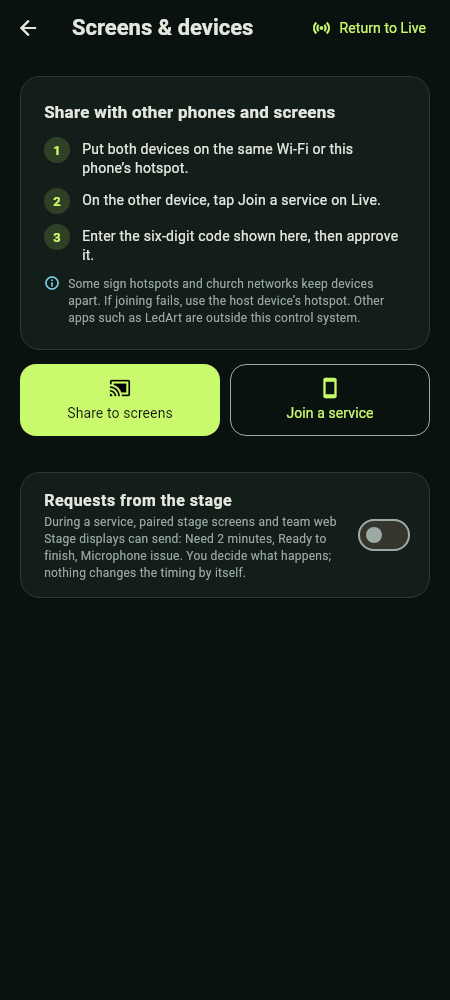
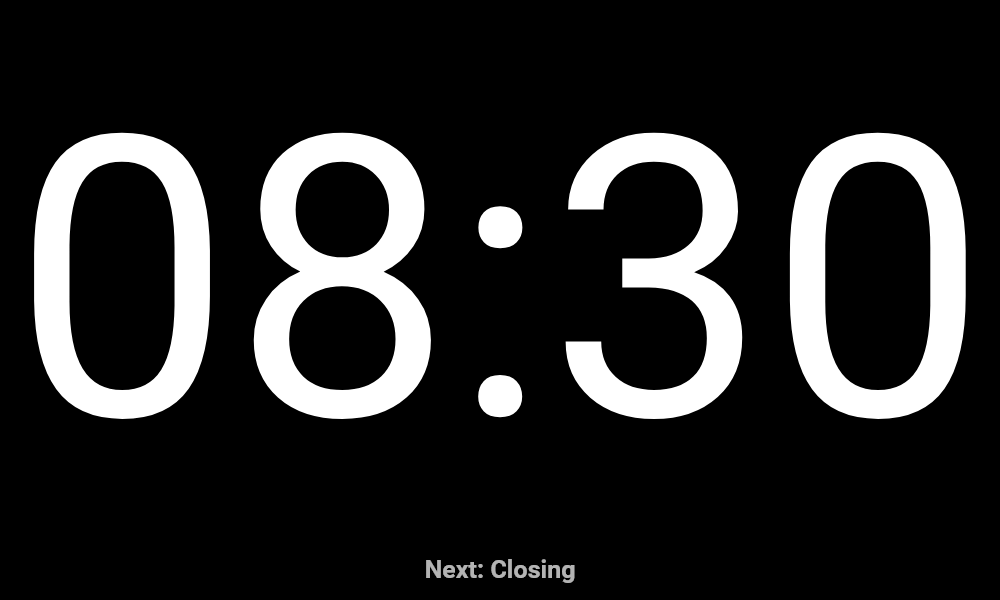

Use one device as the host. It owns the clock and saved data. Other phones and tablets join as stage displays, viewers or additional operators; browsers can follow as web screens.
Network first: put the devices on the same Wi-Fi or on the host phone's own hotspot. Internet is not required. Some sign hotspots, guest Wi-Fi and church networks keep devices apart ("client isolation"), so phones on them cannot reach each other; the app's advice is then to use the host device's hotspot. QR codes do not bypass isolation. If the host moves to another network while sharing, for example when you turn its hotspot on, it shares again at the new address by itself; approved devices, the team code and joined browsers carry over.


- On the host, tap Share to screens on Live (or Settings › Screens & devices). From Choose display › Phone, tablet or web screens, the button is Share to stage screens, which also turns on stage output. Sharing to screens alone keeps LED output.
- On the joining device, tap Join a service on Live. Give it a clear Device name and choose Use this device as: Service viewer, Stage display or Additional operator.
- Select the host under Nearby hosts and enter its six-digit code, including leading zeros, then Join service. Alternatively, use Scan QR code instead with the host's Show QR code.
- The host reviews and Approves the joining device. Knowing the code is not enough by itself.
- A stage display opens in landscape full screen. Tap to reveal its overview and exit tools (Back to service overview, Open stage display).
- Check the host's Saved devices list and use Test screen before going live. Return to Live leaves Screens & devices without ending sharing.
When joining, a phone can offer Rejoin this Wi-Fi automatically: it notes the network it is on (church Wi-Fi, the host's hotspot or the sign's Wi-Fi) and rejoins only that network if the link drops.
Codes expire after ten minutes. If a code expires or its attempts are exhausted, use New code on the host. A new code does not remove already approved devices. Never publish a live pairing code or QR image in training materials.
| Role | Capability and privacy |
|---|---|
| Host | Owns timing, reports and output; approves devices and can take back control. Keep it powered and connected. |
| Additional operator | Initially observes and can Request control; the host must explicitly Give control. Only one operator controls at a time. Private notes become visible when control is granted. |
| Service viewer | Observes service information without control or private operator notes. |
| Stage display | Shows large timer/cue/message content; no private notes or prepared-cue library. |
Handing over control does not move the service to the other phone. If that operator disconnects, control returns to the host. Reconnection does not silently restore its control grant.
For each saved screen, use Screen options to set a recognisable name, a Screen group (General, Preacher, Choir, Media desk) and a Screen layout (Timer only, Timer + current segment, Timer + next segment). The host can choose which acknowledged screen to inspect in the preview.


Disconnect keeps a device saved but pauses its service access. Reconnect on the host can restore it without another code when the receiver app is available on the same reachable network. Forget device revokes approval and requires pairing again. If the receiver deliberately leaves, it must choose Reconnect saved host to rejoin. Stop sharing is deliberate; host sharing does not automatically restart on app launch.
One host with three stage receivers is within the current eight-connection cap for paired devices, which also counts pending connections. That cap is not a guarantee of performance on every router or phone; rehearse the exact setup.
Web screens in a browser
While sharing, Settings › Screens & devices › Web screens shows three ways for a browser on the same Wi-Fi to open the page:
- Easy name, made from the church name, for example
grace-community.local:8080. iPhones, iPads, Macs and most laptops open it; some Android phones do not. Change easy name edits it. - QR code, which any phone camera reads.
- Address, the phone's own address such as
192.168.1.23:8080, as a last resort.
| Browser view | Shows | Needs |
|---|---|---|
| Order of service | The rundown with the current item marked NOW; no times. Speakers only if Show speakers in the order of service is on. | The guest code (4 digits, the same each week until you tap Change guest code), or nothing if set to open. |
| Stage display | The full-screen countdown, cues and Quick messages. | The team code. |
| Service overview | Time left, ahead or behind, finish time and the rundown with durations and speakers. | The team code. |
The 6-digit team code changes each time you share, or with New team code, and unlocks switching between all three views. Order of service access can be Off, Needs the guest code (the default) or Open to anyone on this Wi-Fi. Changing a code signs out the browsers that used the old one. No browser can control the service or see private notes.
Export join slide makes an image with the church name, a large QR code, the easy name, the guest code and the address, ready to project. Pick the screen it is for (16:9 HD or 4K, 16:10, 4:3, Portrait 9:16 or Square) and dark or light. If the phone's address changes afterwards, the panel says the slide is out of date: export it again. A printed address or QR stops working if the router gives the phone a new address, so ask for the address to be reserved on the router, or show the join slide instead.
A browser shows a red "Connection to the host device lost · reconnecting…" banner and fades the countdown within about five seconds of the host going quiet, and picks up again by itself when the host returns. On a web Stage display, the Full screen chip becomes Exit full screen.
Requests from the stage
When Requests from the stage is switched on in Screens & devices (off by default), a presenter can quietly ask the operator for something during a service, from a paired stage screen or a team-code web Stage display. A small Request button offers three fixed choices: Need 2 minutes, Ready to finish and Microphone issue; there is no free text. How the operator answers is in Operate a live service.